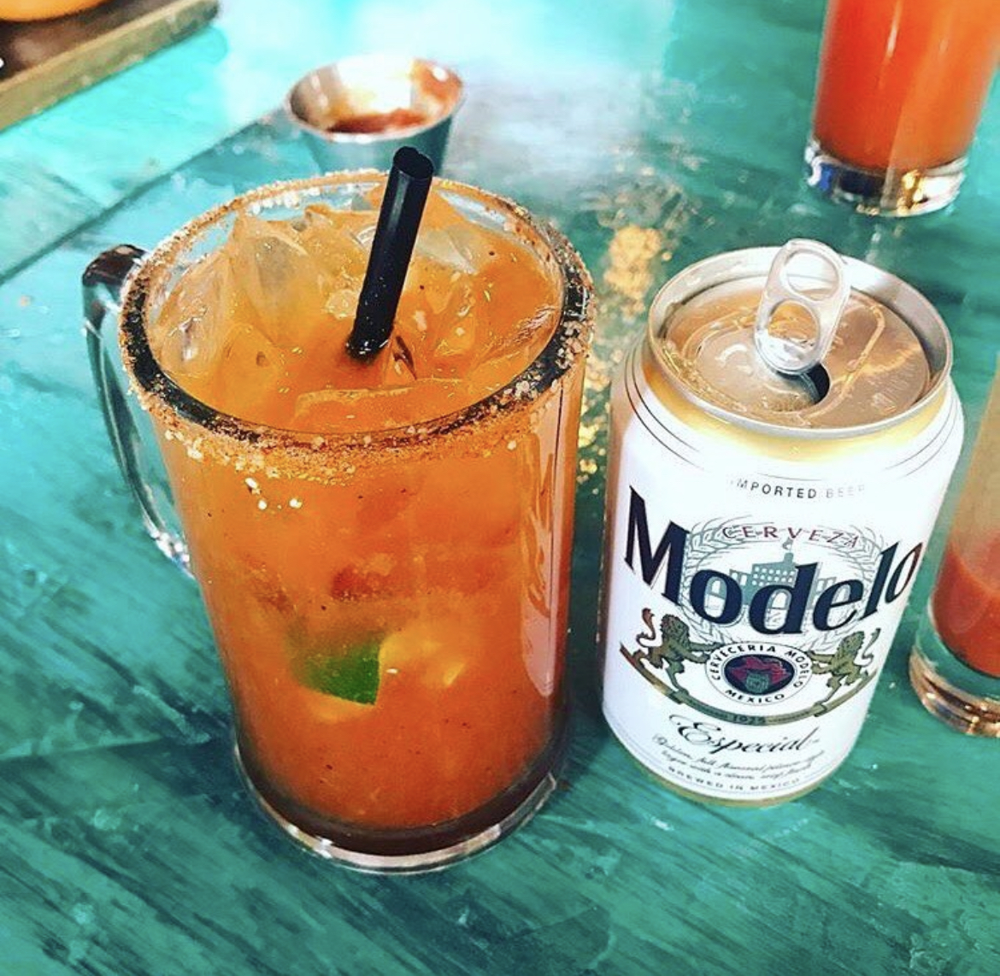

Michelada Mix Recipe

Description
This is the Michelada Mix Recipe from Taco Joint.
Ingredients
- 32oz bloody mary mix
- 4oz oranje juice
- 2oz lime juice
- 3oz valentina black label salsa
- 2 bunches cilantro diced
- 1oz black pepper
Steps
- Add all ingredients into a large container
- Mix thouroughly
- Add 3oz to your favorite mexican beer over ice!
Return to previous page